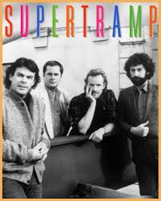

SUPERTRAMP

 Supertramp were a British rock band formed in London in 1970. Marked by the individual songwriting of founders Roger Hodgson and Rick Davies, the group were distinguished for blending progressive rock and pop styles. The classic lineup, which lasted ten years from 1973 to 1983, consisted of Davies, Hodgson, Dougie Thomson, Bob Siebenberg and John Helliwell, after which the group's lineup changed numerous times, with Davies being the only constant member throughout its history.
Supertramp were a British rock band formed in London in 1970. Marked by the individual songwriting of founders Roger Hodgson and Rick Davies, the group were distinguished for blending progressive rock and pop styles. The classic lineup, which lasted ten years from 1973 to 1983, consisted of Davies, Hodgson, Dougie Thomson, Bob Siebenberg and John Helliwell, after which the group's lineup changed numerous times, with Davies being the only constant member throughout its history.
Supertramp found no success with their first two albums, but after a lineup change into what became their classic lineup, their third album, Crime of the Century , was their breakthrough.Initially a more experimental prog-rock group, they began moving towards a more pop-oriented sound with the album. The band reached their commercial peak with 1979's Breakfast in America, which yielded the international top 10 singles "The Logical Song", "Breakfast in America", "Goodbye Stranger" and "Take the Long Way Home". Their other top 40 hits included "Dreamer", "Give a Little Bit" and "It's Raining Again".
I love supertramp for its outstanding vocals and overtures, as it has a great example of how 70s music was at its peak and how it brings importance to music even to this day.
Here is the list of my favorite songs made by Supertramp:
- Fool's overture
- Gone Hollywood
- Lover Boy
- School
- Even In The Quietest Moments
- Breakfast In America
- Logical Song
My contact information
Ronald Ortiz
Bayonnne Highschool
Bayonne NJ 07002
Want to ask question or share your thoughts on music, contact me at: Ronald Ortiz
Page last updated on
April 29, 2026